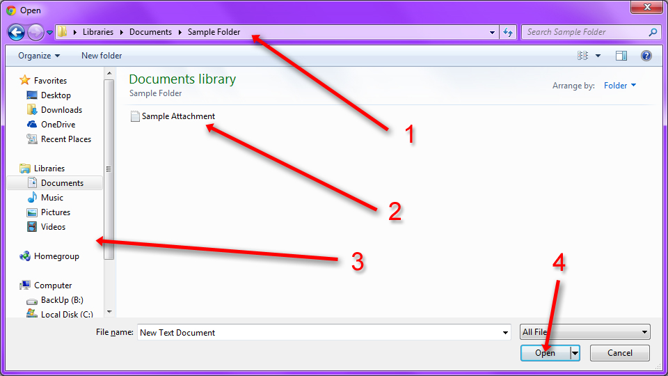

Lesson Navigation
Introduction
This section will describe what email is and why you should use it.
Email Interface
This section will describe what a typical email interface looks like.
Your Folders
This section will describe the most common folders of an Email interface, such as Inbox, Drafts, Sent, Trash, and Spam.
Set up a Contacts list
This section will describe the importance of a basic contacts list, and what you should include.
Send an Email
This section will describe how to send an email.
Email Attachments
This section will describe how to attach files to an email.
Email Etiquette
This section will describe proper email etiquette in a professional and personal sense.
Get an Email address
This section will describe where and how you can sign up for your own email address.
Email Lessons (Basics)
Email Attachments
In this section, we'll learn about email attachments. Email attachments are a useful part of sending an email, because it makes it easy to send documents and images to other people just as rapidly as you can send an email. You can send any attachment that is in the correct size range and file type that your email service provider will allow. Usually images, videos, music files, PDFs, documents and other microsoft office (Presentations, excel spreadsheets, Microsoft word files) are okay. If your email service provider doesn't allow it, you should recieve a warning message telling you why the email can't send. Sometimes if the file is too large, you need to make it smaller before you can send it. Don't worry too much about that right now. Fortunately, email attachments are easy to use!
You're going to start by logging into your email account, and composing a new email. (See, "Send an Email"
in the previous lesson.) After you've done that, fill out your email "To", "Subject" and "Content"
fields just like you did before. Don't hit send yet!
When you're ready to add an attachment, you first need to know where the file you want to attach is located on your computer. When you know the file location, it makes it a lot faster and easier to attach it to the email.
Your attach button should be easy to find. It's usually at the bottom or top of the content area, and shaped like a paper clip.
As you can see in the diagram to the left, in the yahoo interface the attachment button is located directly next to the send button. This makes it hard to forget to add your attachment to the email before you send it.
If you look at the diagram below, you can see an example of how to find your attachment file on your computer. The file can be called whatever you like.

1. This is your file location. This is how you know what folder you are looking at.
2. This is the file you want to attach. You should click on it so that it is selected.
3. This is the folder listing of all the folders on your computer. If you need to, you can use this to find the folder where your file is located.
4. Press "Open" when you're ready to attach the selected file to your email.
After you click "Open" and attach the file, it may take a few minutes for the file to load into the email. When the file is ready, your email will look something like this:
As you can see, your attachment is now located at the bottom of the email above the "send" button. You have the option to remove the attachment, but if you don't need to do that or add anything else, you're ready to go. After the attachment has finished loading, you can hit "Send" and you're done!
Now that you know how to add an attachment to an email, you've learned all the technical functions in the basic email tutorial. It's time to talk about email etiquette. When you're ready, click "Next Lesson" to move on. If you would like to review how to send an email, click "Previous Lesson".
Helpful Links:


The Simply Social brand is Simply Social Inc. 2014. Simply Social only owns the Simply Social logo, and all other images are copyrighted by their respective owners. The sources for these images, as well as the website icons, can be found in the about page. This website was made for a class project, and is not intended for any kind of commerce or commercial use. Simply Social is not affiliated in any way with any of the other websites mentioned or linked to in this website.